Collaborations


100 Years of the Revolution. A documentary about the Guna community of Panama, filmed on the centenary of the 1925 Dule Revolution and told in their own voices: identity, memory and resistance.
I arrived in Guna Yala during my stay in Panama thanks to the Universitat Politècnica de València's development cooperation grant. A conversation with members of the community about the Dule Revolution and the importance of cultural preservation became the starting point of my final degree project.
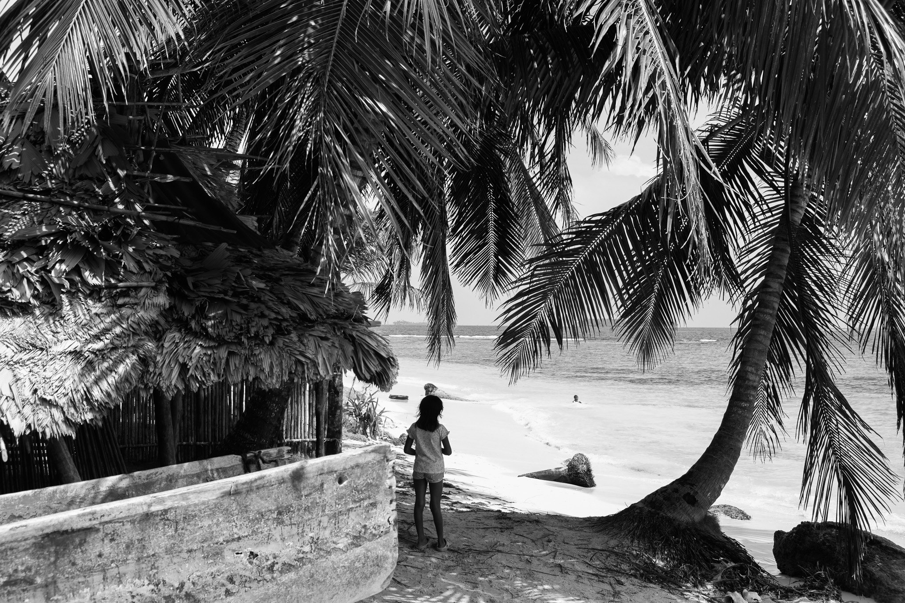
100 años de la Revolución is an intimate, observational documentary filmed on the islands of Guna Yala, marking the centenary of the revolution that secured the autonomy of the Guna people. It does not set out to speak about the community, but with it: their own voices tell of cultural identity, collective memory and the challenges they face today.
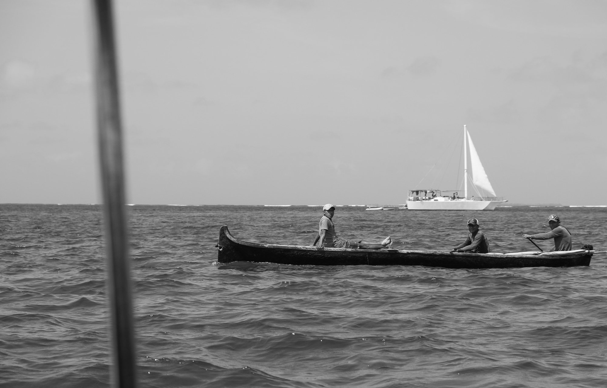
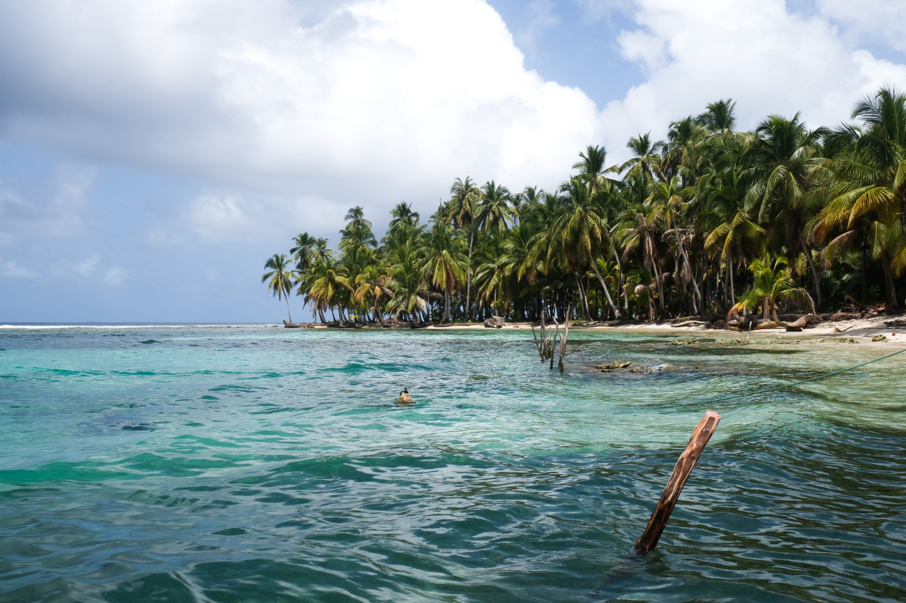
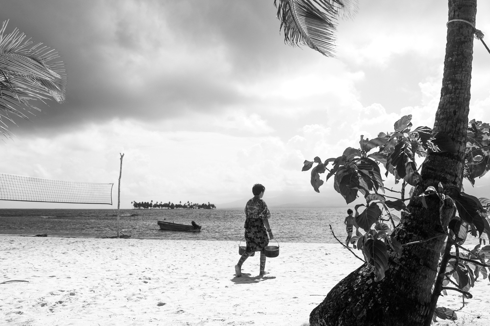
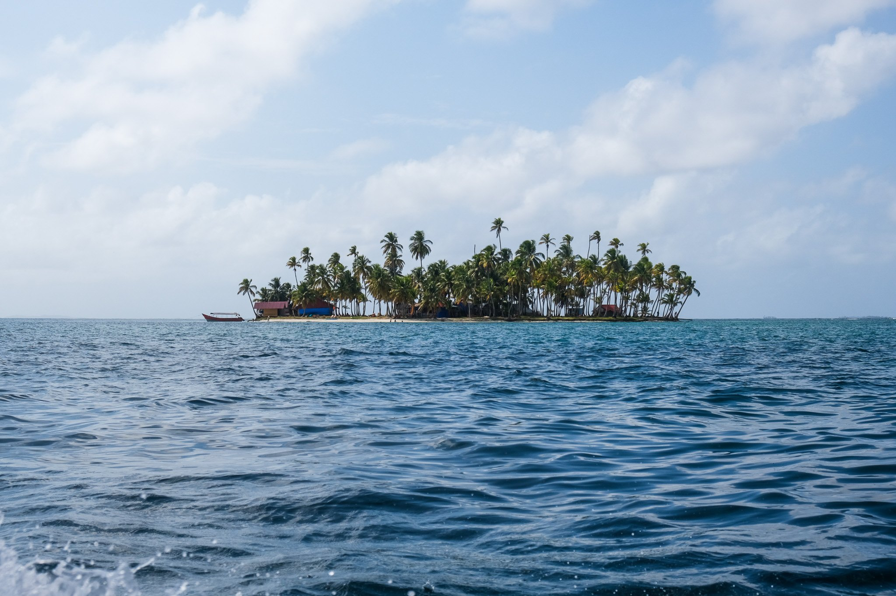
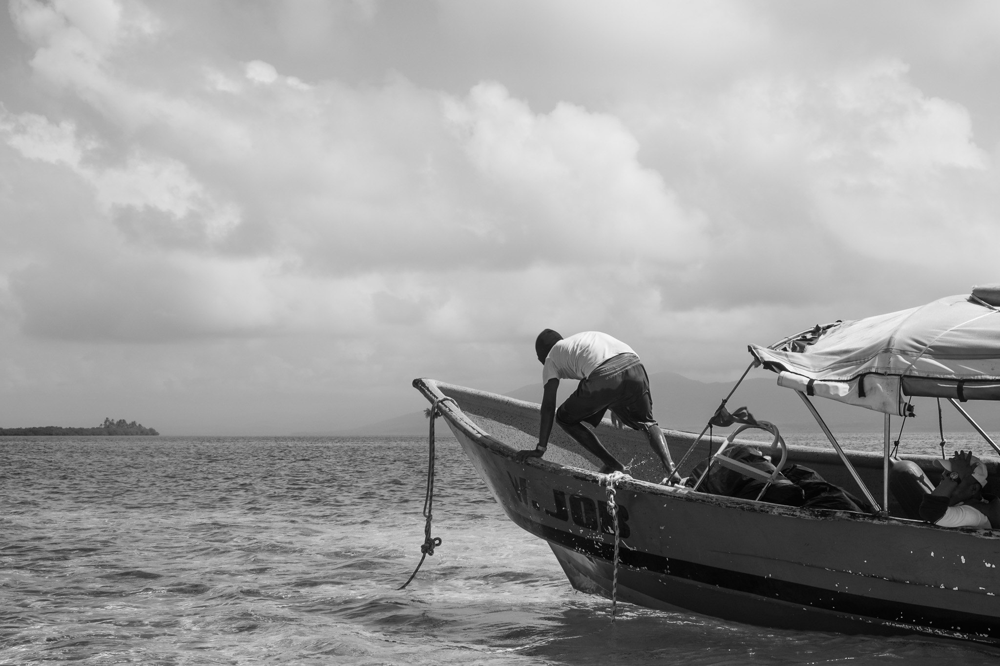
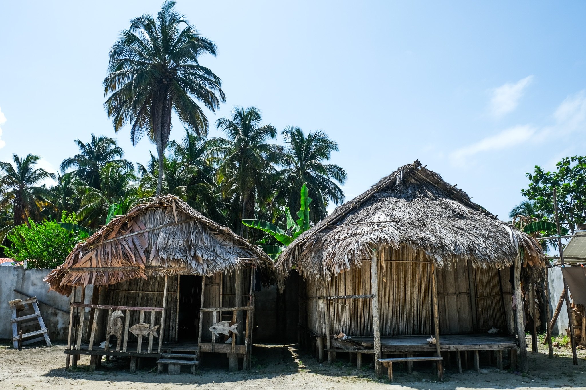
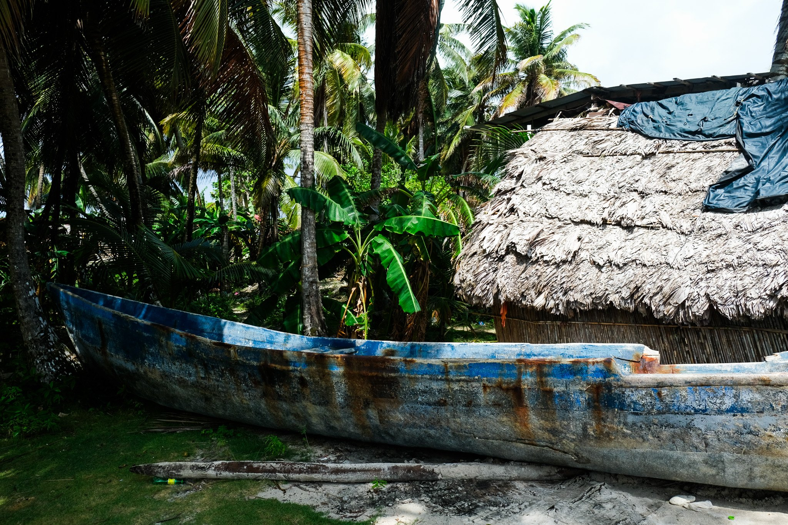
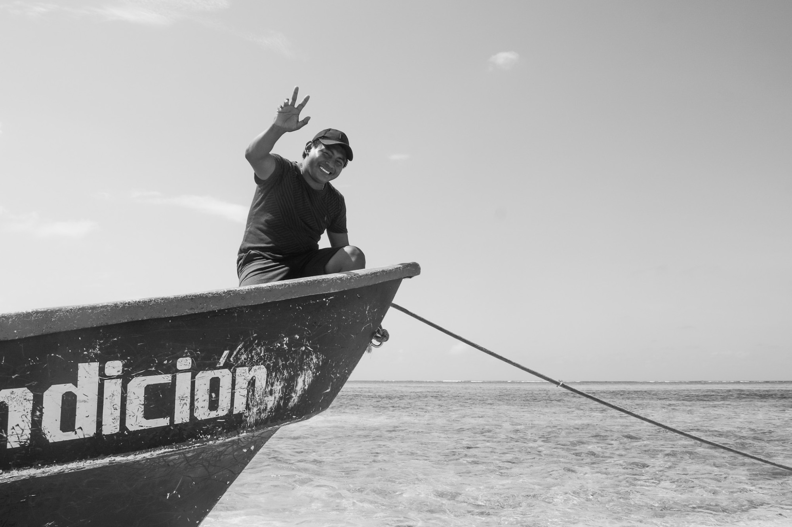
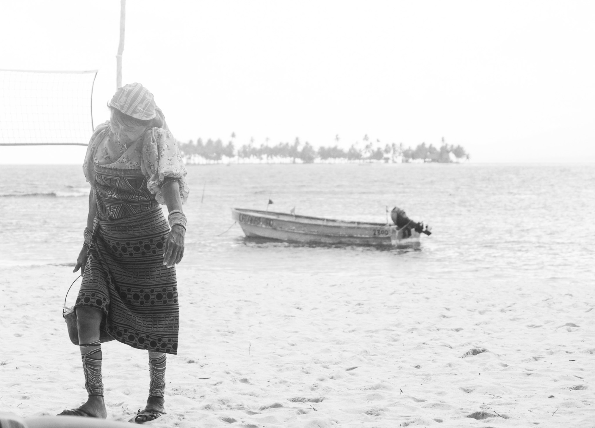
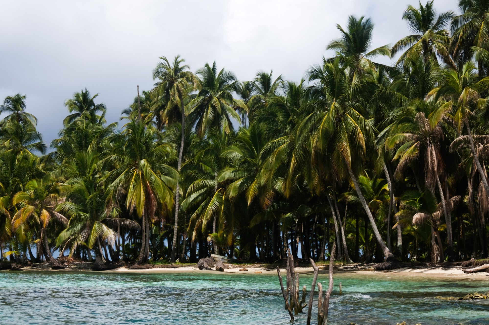
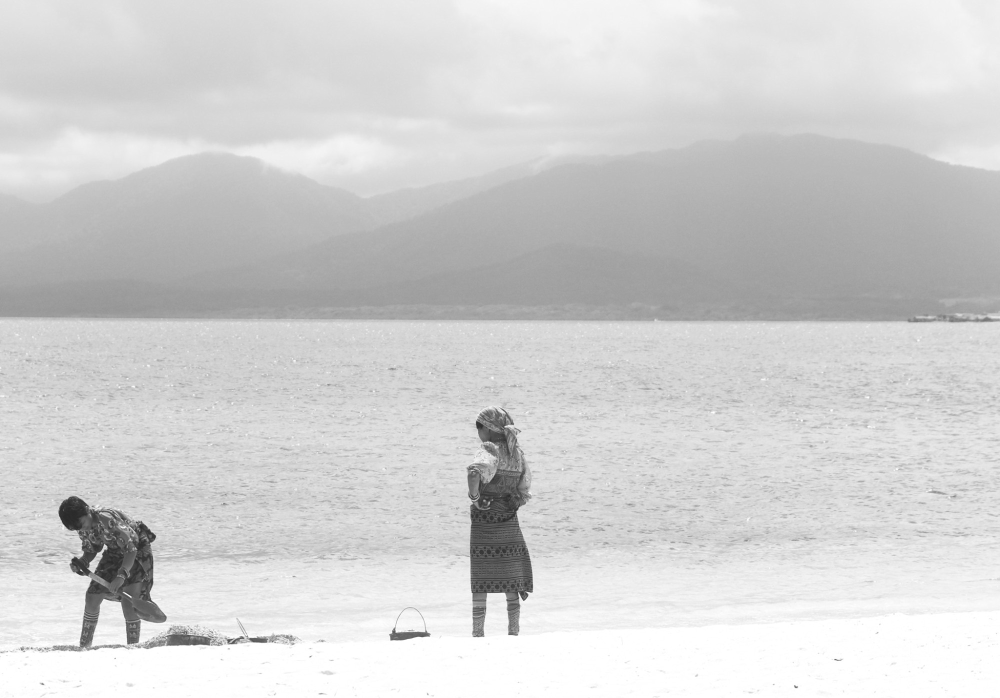
Research, filming, interviews, editing, colour grading, sound design and graphics are all my own work, carried out alone while living with families on Isla Ina and Isla Morrodub.
Original soundtrack by Juan González Poveda.
In collaboration with the Museo de la Mola and with photographic documentation from anthropologist James Howe.